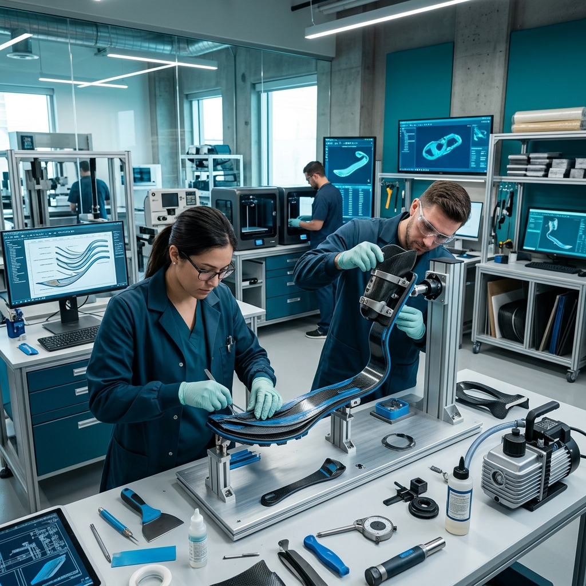
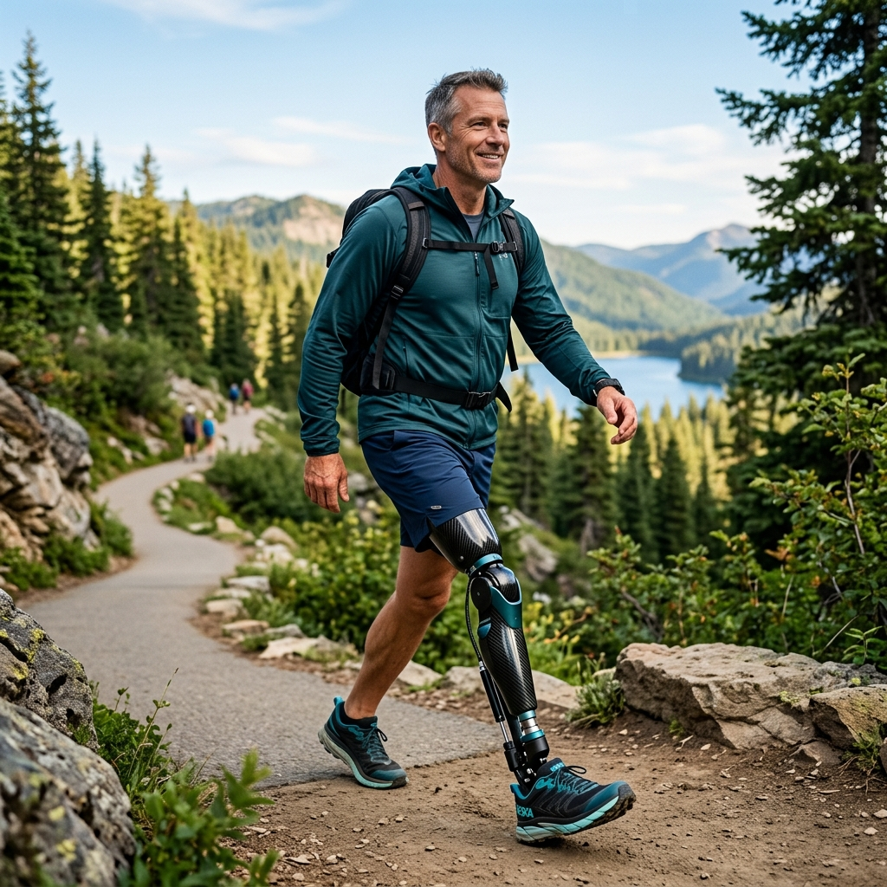
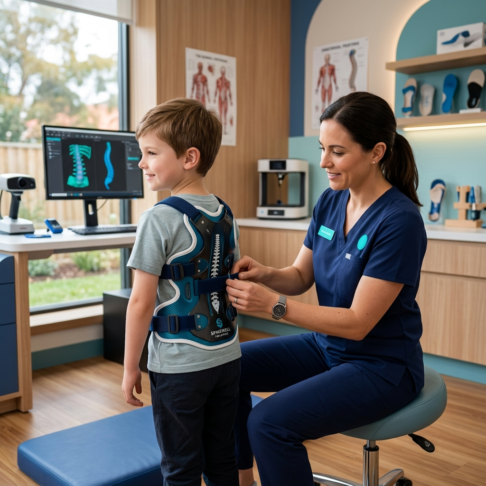

Patient Transformation Stories
Data-backed records of orthotic alignment improvements, myoelectric limb restoration processes, and patient velocity analytics.



High-Performance Transtibial Prosthesis Integration
Challenge
Patient requested high-activity dynamic load alignment for running. Traditional socket designs caused residual limb abrasion and excessive energy loss during K3-K4 velocity transitions.
Solution & Fabrication
Manufactured a custom carbon-fiber vacuum suspension socket integrated with dynamic shock-absorbing blades. Used 3D scan modeling for volume adaptation and localized skin stress mapping.
Outcome & Timeline
Gait symmetry restored to 98% variation index. The patient achieved full independence in walking, running, and climbing tasks in under 6 weeks.
Mobility Gained
Recovery Time
Satisfaction
Mobility Case Files
Clinical documentation of different orthotic configurations and bionic prosthesis adaptations.

Sports ProstheticsActive Composite Blade Tuning
Challenge: Restoring competitive running gait alignment to lower-extremity amputee.
Treatment: Carbon fiber runner blade + multi-axial rotation anchor socket.
Result: Restored to active running status within 5 weeks; decreased energy loss index by 22%.

Pediatric FittingMicro-Linkage Pediatric Orthotic
Challenge: Joint stability support for growing pediatric patient with congenital motor difficulty.
Treatment: Adjust-to-grow lightweight polymer braces with hypoallergenic inner liners.
Result: 45% increase in daily steps count; significant joint alignment stabilization.
Myoelectric Articulated Wrist
Challenge: Restoring fine-motor control for high-fidelity tasks following a transradial amputation.
Treatment: Sensor-based myoelectric socket + custom firmware parameter calibration.
Result: Rebuilt 95% grip accuracy, restores capability to write and handle glassware.
Mobility Comparison Metrics
Drag the slider tool to compare prior device structures against final custom dynamic alignments.


Clinical Advancements
Replacing outdated plaster structures with custom 3D scanning and fabrication reduces wear stress and improves movement speed.
Recovery Milestones achieved
Healthcare Outcomes Dashboard
Quantifiable biological restoration stats verified by referring orthopedic practitioners.
0+
Successful Fittings
0.8%
Patient Comfort Rating
0%
Gait Velocity Boost
Follow-Up Success Rate
Restored
Percentage of patients achieving their physical goals within the first 60 days post-prosthetic alignment fitting.
Gait Velocity Analytics
TranstibialComparison of gait velocity meters/second post-fitting calibrating phase over a six-week timeline.
Healthcare Reflections
Read endorsements from referring orthopedists and actual patient journeys.
"The volume accuracy of ApexFlex's CAD/CAM system is unmatched. My patients return from fitting sessions with zero pressure nodes, accelerating physical therapy timelines."

Dr. Elizabeth Vance
Chief of Orthopedic Surgery • Harborview
"We coordinate gait updates with ApexFlex. Their live socket sensor data lets us check pressure distributions, making orthotic calibrations very precise."

James Sterling, DPT
Director of Amputee Rehab • Northwest Physio
"After my below-knee amputation, I feared running was over. The custom socket fits like my own leg. I completed my first local 5K run last weekend!"
James Thornton
Active Amputee Patient • Runner
"The volume accuracy of ApexFlex's CAD/CAM system is unmatched. My patients return from fitting sessions with zero pressure nodes, accelerating physical therapy timelines."
Dr. Elizabeth Vance
Chief of Orthopedic Surgery • Harborview
"We coordinate gait updates with ApexFlex. Their live socket sensor data lets us check pressure distributions, making orthotic calibrations very precise."
James Sterling, DPT
Director of Amputee Rehab • Northwest Physio
"After my below-knee amputation, I feared running was over. The custom socket fits like my own leg. I completed my first local 5K run last weekend!"
James Thornton
Active Amputee Patient • Runner
Ready to Start Your Mobility Transformation?
Coordinate directly with our physical fabrication specialists and board-certified orthotists. We accept direct physician referrals.